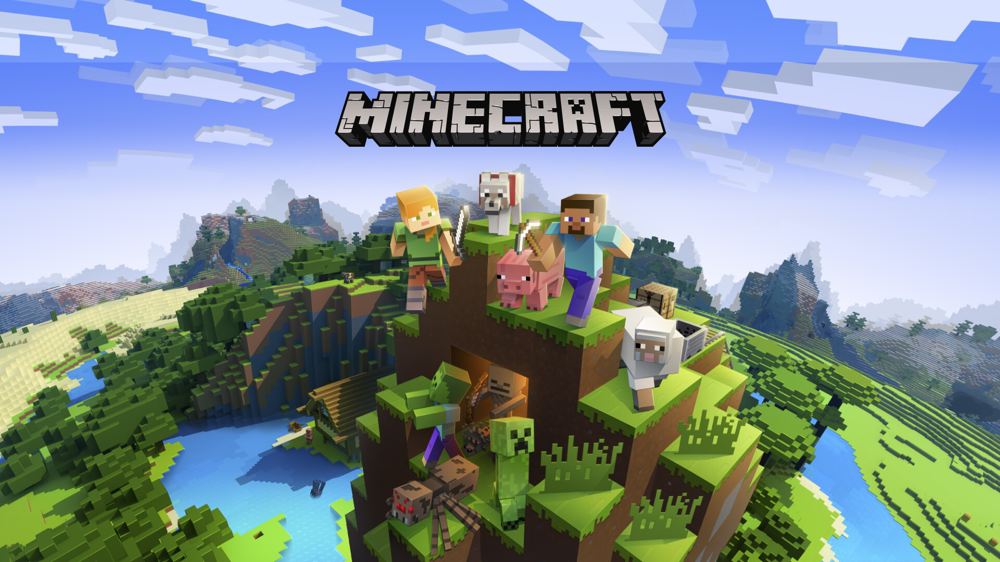
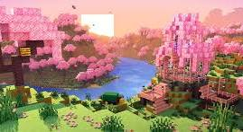
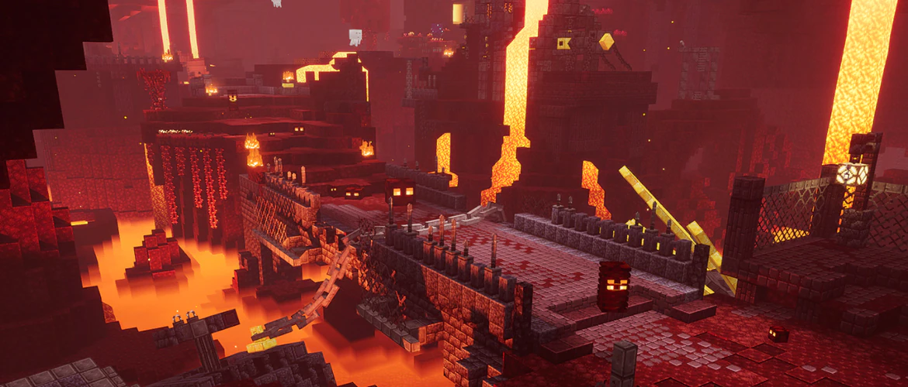
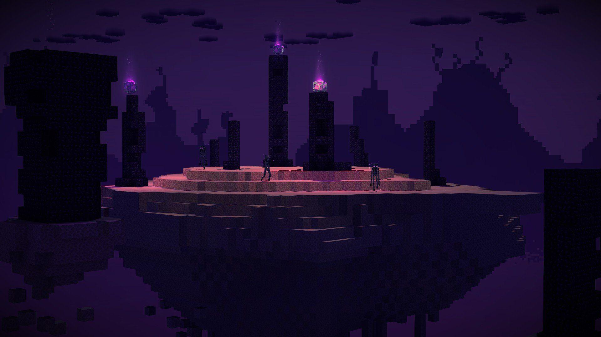
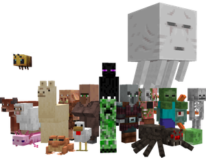
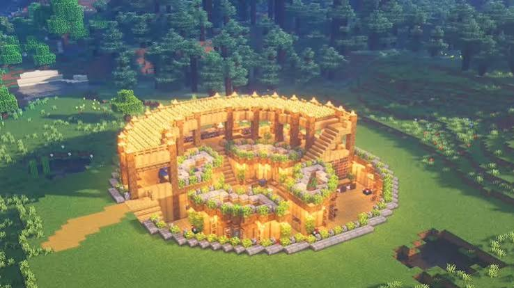

Jump to: Latest news | Game modes | Dimensions | Biomes | Mobs | Bosses | Resources | Redstone | Editions | Beginner tips | Videos | Timeline | Fun facts

Minecraft is a sandbox video game developed by Mojang Studios. It allows players to explore a blocky, procedurally generated 3D world, discover and extract raw materials, craft tools and items, and build structures or earthworks. Players can also engage in combat with computer-controlled "mobs" and cooperate with or compete against other players in the same world.
Last updated: October 8, 2026. This is what is out now and what was announced at Minecraft Live in September 2026.
| What | When | What it is |
|---|---|---|
| Wilderness Bound (game drop 3) | Out now | Adds the Dappled Forest biome with colorful poplar trees, Abandoned Camps with loot, straw beds that let you skip the night without changing your respawn point, cushions for furniture and a new gray wood set. |
| Minecraft Dungeons II | Out now (September 29, 2026) | The sequel to the dungeon-crawling spin-off. It has co-op action, an open world, parkour sections and the town of Bravehaven. |
| Ice Caves (game drop 4) | Later in 2026 | A rare underground cold biome with glowing ice crystals. It adds the frozen zombie, a new hostile mob that freezes you and throws ice balls. The ice balls can be used as weapons or in a new potion. |
| Dungeons II first DLC | Sometime in 2026 | The first extra content pack for Minecraft Dungeons II. |
| Sound Effects Packs | Later in 2026 | New packs for the Minecraft Marketplace that change how the game sounds. |
| Creator Platform | In development | A new tool to make it easier to create, manage and share your own Minecraft content. |
| The Sift | 2027 | The first new dimension in more than 14 years. It debuts in Dungeons II, then comes to Minecraft Java and Bedrock. |
| Minecraft World hotel and rollercoaster | 2027 | The first official Minecraft hotel and a rollercoaster called Escape the Nether, at Chessington World of Adventures Resort. |
Also in the news:
Minecraft offers several game modes, including:
| Mode | What you do |
|---|---|
| Survival | Players must acquire resources to build the world and maintain health. |
| Creative | Players have unlimited resources to build with and the ability to fly. |
| Adventure | Players can play custom maps created by other players with certain restrictions. |
| Spectator | Players can freely move throughout a world without being affected by gravity or other game mechanics. |
The game world is split into three dimensions, each with its own look and dangers. A fourth one, the Sift, is coming in 2027.
| Dimension | What it is |
|---|---|
| The Overworld | The main world, with forests, mountains, oceans, caves and villages. Every player starts here. |
| The Nether | A hot and dangerous dimension full of lava. You reach it by building a portal out of obsidian. |
| The End | A dark dimension of floating islands where the Ender Dragon lives. You enter it through a portal hidden in a stronghold. |



The Overworld is made of biomes. Each one has its own plants, animals, weather and things to find.
| Biome | What makes it special |
|---|---|
| Plains | Flat, open land that is great for your first base and often has villages. |
| Desert | Hot sand with no rain. Look for desert temples with hidden treasure. |
| Jungle | Thick trees, bamboo and parrots. Jungle temples hide traps and loot. |
| Snowy Plains | Cold land where water freezes and snow falls instead of rain. |
| Mushroom Fields | A rare island biome where hostile mobs never spawn. Only mooshrooms live here. |
| Cherry Grove | A mountain biome with pink trees and falling petals. |
| Dappled Forest | A new forest with tall poplar trees in red, orange and yellow. It was added in Wilderness Bound. |
| Deep Dark | A silent underground biome with ancient cities, and the home of the Warden. |
Mobs are the creatures you meet in the game. Some attack you, some ignore you, and some help you.
| Mob | Type | What it does |
|---|---|---|
| Creeper | Hostile | Sneaks up on you and explodes. |
| Zombie | Hostile | Walks toward you and attacks, mostly at night. |
| Skeleton | Hostile | Shoots arrows from a distance. |
| Enderman | Neutral | Teleports around and gets angry if you look at it. |
| Villager | Passive | Lives in villages and trades items with you. |
| Iron Golem | Neutral | Protects villages from hostile mobs. |

Some enemies are much stronger than normal mobs. Prepare well before you fight them.
| Enemy | Where it is | What to know |
|---|---|---|
| Ender Dragon | The End | The final boss. It flies around and heals itself from crystals on tall towers, so destroy the crystals first. |
| Wither | Summoned by the player | You build it from soul sand and three Wither Skeleton skulls. It shoots exploding skulls and is very dangerous. |
| Warden | Deep Dark | It is blind but hears vibrations, so walking or placing blocks can wake it. Sneak past it instead of fighting. |
| Elder Guardian | Ocean monuments | Gives you Mining Fatigue, which makes you dig very slowly. |
Digging underground is how you get the materials for better tools, armor and machines.
| Resource | What it is used for |
|---|---|
| Coal | Fuel for furnaces and the main ingredient for torches. |
| Iron | Good tools, armor, buckets and rails. |
| Copper | Lightning rods, spyglasses and colorful building blocks. |
| Gold | Powered rails, golden apples and trading with piglins. |
| Redstone | Powers machines, doors, pistons and circuits. |
| Lapis Lazuli | Used for enchanting your gear. |
| Diamond | Very strong tools and armor. It is found deep underground. |
| Netherite | The strongest material. You make it from Ancient Debris found in the Nether. |
Redstone is Minecraft's version of electricity. Redstone dust carries power along a line, and you can use it to build automatic doors, hidden entrances, farms and even working calculators.
Minecraft comes in different editions, and they play slightly differently.
| Edition | Where you play | What is different |
|---|---|---|
| Java Edition | PC (Windows, Mac, Linux) | The original version. It has the biggest mod community and many custom servers. |
| Bedrock Edition | Consoles, phones and Windows | Lets players on different devices play together. |
| Education Edition | Schools | Made for teaching, with extra tools for teachers. |
Follow these steps to survive your first day:
Want to see the game in action? These links open YouTube in a new tab.
Official Minecraft channel Trailers Beginner tutorials Amazing builds
Some of the biggest moments in Minecraft's story:
| Year | What happened |
|---|---|
| 2009 | Notch releases the first public version of the game. |
| 2011 | Minecraft 1.0 is officially released on November 18. |
| 2014 | Microsoft buys Mojang for about 2.5 billion dollars. |
| 2020 | The Nether Update makes the Nether bigger and more dangerous. |
| 2021 | Caves & Cliffs makes caves and mountains much taller and deeper. |
| 2022 | The Wild Update adds mangrove swamps, the Deep Dark and the Warden. |
| 2023 | Trails & Tales adds cherry groves, archaeology and the camel. |
| 2024 | Tricky Trials adds trial chambers and the mace weapon. |
| 2025 | A Minecraft Movie comes out in cinemas. |
| 2026 | The Wilderness Bound game drop and Minecraft Dungeons II are released. |
Minecraft was created by Markus "Notch" Persson and was first released to the public as a developmental release on May 17, 2009. The game quickly gained popularity, leading to the formation of Mojang Studios and the official release of Minecraft on November 18, 2011. Since then, it has become one of the best-selling video games of all time, with a large and active player community.
Minecraft has had a significant impact on gaming culture, inspiring countless players to create their own content, including mods, custom maps, and YouTube videos. The game's open-ended nature encourages creativity and problem-solving, making it popular among players of all ages. Additionally, Minecraft has been used in educational settings to teach subjects such as mathematics, history, and computer programming. In 2025 the game even got its own Hollywood film, A Minecraft Movie, which earned roughly 960 million dollars at the box office.
